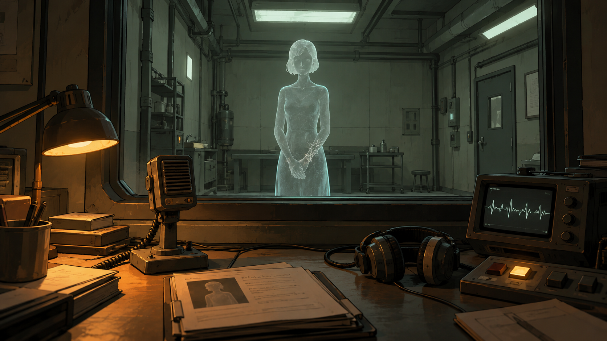
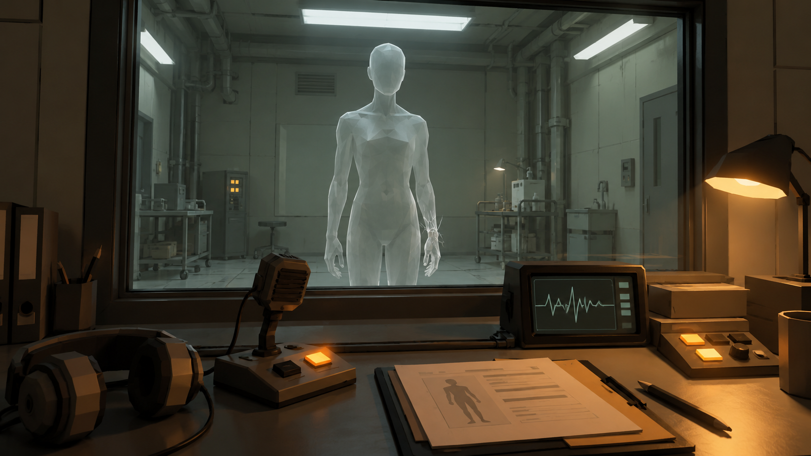

← Повернутися до демкиКОНЦЕПТ ГРИ / ПРЕЗЕНТАЦІЙНА ВЕРСІЯ
Відлуння.
Ви перевіряєте відтворення померлих перед останньою розмовою з їхніми родичами. Одне з них пам’ятає вас. І всі попередні сеанси, які ви вирішили забути.
Формат
Психологічний хорор від першої особи. Гравець сидить за робочим столом оператора, оглядає 3D-лабораторію, вивчає справи й спілкується з відлуннями через інтерком. Основний конфлікт — між обов’язком перевірити реконструкцію та бажанням не чути болісної відповіді.
Три слова
| Слово | Втілення у грі |
|---|
| Крихкий | Матеріальне тіло відлуння — скляна оболонка. Розмова супроводжується видимими тріщинами й звуком напруження скла. Крихкими також є пам’ять та здатність оператора прийняти правду. |
| Слухати | Гравець слухає відповіді, звіряє їх із досьє й помічає фрази, яких не мало бути. Перевірка контрольного спогаду потребує уваги до репліки. Кульмінація — свідоме рішення дати людині договорити. |
| Лабораторія | Робочий процес, контрольні дані, номери сеансів, інтерком, монітор стану оболонки та камери реконструкції формують простір і правила гри. |
Світ і роль гравця
Інститут ECHO створює тимчасові відтворення померлих із голосових повідомлень, листування, відео та свідчень близьких. Послуга обіцяє можливість попрощатися. Реконструкція не вважається воскресінням: вона має обмежені знання та повинна пройти перевірку перед зустріччю з родичами.
Оператор 071 працює в нічну зміну. Він запускає відлуння, перевіряє особистість, фіксує відхилення та завершує сеанс. На початку гравець довіряє процедурі й вважає, що після завершення відлуння перестає існувати.
Скляні люди
Пам’ять отримує тимчасове фізичне тіло з напівпрозорого матеріалу. У ньому впізнається людський силует, але обличчя залишається нечітким. Це підтримує образ неповної реконструкції та дозволяє стилізовану 3D-модель без складної міміки.
У демці тріщини виникають у визначені моменти сценарію. Вони показують нестабільність відлуння, а не карають гравця за неправильно обрану репліку.
Механіки
| Дія | Результат і призначення |
|---|
| Відкрити досьє | Прочитати контрольні дані та зіставити їх зі словами відлуння. Справа сестри містить номер 047. |
| Увімкнути інтерком | Почати перевірку після ознайомлення зі справою. |
| Слухати й повторювати | Репліки показуються субтитрами; браузерна синтезація голосу озвучує їх за наявності підтримки. Окрема дія повторює поточну репліку. Поза діалогом контактний мікрофон відтворює звукові сигнали оболонки. |
| Звірити відповідь | Вибрати почуте звертання до доньки. Помилкова відповідь веде до повторної перевірки, без глухого кута. |
| Уточнити дивну фразу | Розпитати про згадку попереднього сеансу та отримати додаткове свідчення. |
| Озирнутися | Оглянути кімнату затиснутою мишею. У кульмінації відкрити для себе постаті у бічних камерах. |
| Ухвалити фінальне рішення | Зберегти пам’ять і завершити цикл або стерти власні спогади й запустити новий сеанс. |
Сценарій демки
1. Звичайна робота
Олена Марчук правильно пам’ятає свою доньку Марту, звертання «ластівка» та недільний чай. Гравець підтверджує контрольний спогад. Проте вона просить не пускати доньку «знову», хоча в досьє зазначено перший сеанс. Якщо уточнити, відлуння каже: після вимкнення світла воно не зникло — просто ніхто більше не відповідав.
2. Особиста справа
Після завершення перевірки завантажується Анна — сестра оператора. Вона називає його «капітаном», згадує, як вони ховалися під столом від грози, та передбачає його реакцію на номер справи.
3. Сорок сьома розмова
Анна пояснює: оператор уже сорок шість разів відновлював її, запитував, чи міг урятувати, а потім стирав власну пам’ять. Додатковий службовий запис містить його прохання не дозволяти йому знову починати спочатку.
4. Архів
Відкриваються бічні камери з попередніми відтвореннями. Вони залишалися в лабораторії й чули наступні розмови. Анна просить дати їй закінчити.
Два завершення
Дати договорити. Анна каже, що хотіла почути голос брата, а не вимагала від нього порятунку. Оператор відповідає: «Я слухаю». Він зберігає пам’ять і припиняє створювати нові версії сестри.
Ще один дубль. Оператор стирає власні спогади. Анна просить наступного разу дати їй договорити. Починається сеанс 048.
Візуальний напрям
Стилізоване 3D з простими формами: холодна зелено-сіра лабораторія, тепла настільна лампа, фізичні перемикачі, паперові справи та гранована матова постать. Атмосфера виникає з контрасту буденної роботи й людської розмови в камері. Кров і тілесні рани не використовуються.

Концепт-арт: мальована стилізація. Візуальний орієнтир, не скриншот демки.
Концепт-арт: гранована постать та прості форми обладнання. Візуальний орієнтир, не скриншот демки.Маршрут показу на три хвилини
| Час | Що показати |
|---|
| 0:00–0:30 | Робоче місце, досьє та запуск інтеркому. Одним реченням пояснити роботу оператора. |
| 0:30–1:10 | Контрольний спогад і фразу «не пускайте її знову». Позначити відхилення. |
| 1:10–2:15 | Анна, звертання «капітан», номер сеансу та пояснення повторень. Репліки перемикаються вручну, тому темп показу контрольований. |
| 2:15–3:00 | Озирнутися на бічні камери, показати фінальний вибір. Завершити словами про право іншої людини бути почутою. |
Розвиток повної гри
Кілька робочих змін із різними клієнтами. Більше контрольних запитань, незалежних свідчень і рішень про допуск до родичів. Відкриття архіву та причин збереження попередніх відлунь. Поступовий перехід від професійної відповідальності до особистої залежності від реконструкцій. Ці елементи — напрям подальшого розвитку, вони не заявляються як уже реалізовані в демці.
Поточна версія
Реалізовано: процедурна 3D-сцена, огляд із місця оператора, активні предмети, два досьє, перевірка спогаду, діалогові гілки, тріщини, звукові ефекти, відкриття бічних камер і два фінали. Основний рендерер — WebGL, запасний — програмна проєкція тих самих 3D-моделей із простішим освітленням. Озвучення залежить від голосів браузера; українські субтитри доступні завжди. Вільна ходьба, складна міміка та фізичне руйнування на уламки в цю версію не входять.
Запустити демку →